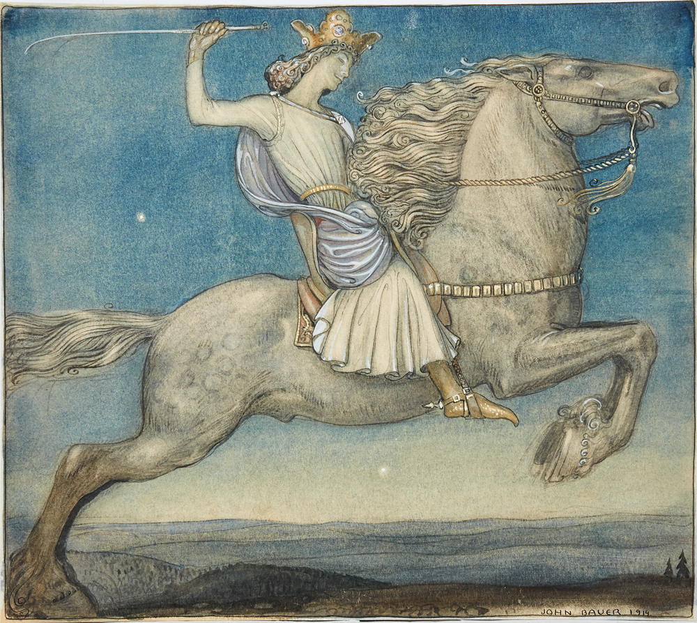

Ringen
En ring speglad i nattens trolska vatten. Men icke en vanlig ring – ty det jag talar om har silkens stil, men dödens syfte. Månens frostiga ljus lös på endast mig den kvällen. På stranden stod jag som i centrum på scenen av en tragisk teaterpjäs.
I slottets glödande matsal efterlyste jag ringens ägare. Rådvill.
Ringen lyftes inför noblessen som satt uppradade längs långborden som var så fulla av fläsk, svagdricka, kycklingar, tårtor, musslor och gäss att borden bågnade. Sorlet av damernas förundran bröts av deras förhävelse. Förrådande. Ve hovet och dess girighet då de avvisar bandet av kärlek och längtan – deras pupiller ständigt bländade av förmögenheternas herravälde. I konkurrens lyftes par av händer gyllenprydda i rad, där juvelerna blänkte rött i bankettens facklor, men jag hade redan återvänt till månskenet. Min nätta ring har mer att erbjuda än havet självt.
Har mina ord melodi? Säger mina ögon ting jag själv blott inte kan? Jag färdades över land och rike kring, sökandes efter den som ringen behagar. Vid slutet av min vandring ska jag nå tiden då våra skuggor förenas och blir till en, tiden då jag har lyckats fly min undergång.
Jag lever än, men konstnären är död. Han följde blint den som utgav sig för att vara ringens ägare, och för det har han fått betala. Trollbarnet med solens ögon följer oss båda, jämrandes att: ”endast jag blir ensam kvar med ånger och sorg. Den andre bortom allt annat.” Och så har vi ringen, som förförde konstnären ombord på ödets galeon. Röken från pipans kammare slets sönder av vinden, medan konstnären sakta sjönk, som ringen själv. På sjöns botten kan inte ens månen nå honom. Trollbarnets viskningar hade sagt honom vad som komma skall. ”Om du sviker mig, skall du veta att havet kommer äta dig hel. Svik mig inte.” Inget överraskade konstnären, inte ens hans egen död.
Skogen vet vad jag talar om ty de nu kan se mina tankar. Men vad mer? Framtiden? Den likens doft nalkas, den svunne själen svalkas.

Tillbaka